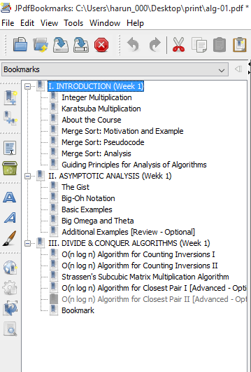

PDF Dosyalarına Yer İmi (Bookmark) Eklemek
Uzun PDF dosyaları ile verimli bir şekilde çalışabilmek, sayfalar ve bölümler arasında kolayca gezinmek için yer imleri (bookmarks) mutlaka gerekli. Maalesef bazı PDF dosyalarında bu yer imleri mevcut olmayabiliyor. Benzer durumla karşılaşabilecek arkadaşlar için yaşadığım tecrübeyi ve bulduğum küçük ama çok kullanışlı bir programı paylaşmak istedim.
Elimde bir dersin konu-konu sunumları vardı. Onlarca sunum dosyası yerine tek bir PDF dosyası çok daha kullanışlı olur diye düşündüm. Bunun için şuradaki online PDF birleştirme aracı çok işime yaradı ve elimde yaklaşık 500 sayfalık (slaytlık) bir PDF dosyası olmuş oldu. Ancak hangi konu kaçıncı sayfadaydı belli olmadığı için bu PDF’in o kadar da kullanışlı olmayacağını düşünüyordum ki aklıma PDF üzerinde oynama yapabileceğim ve istediğim sayfaları yer imi (bookmark) olarak işaretleyebileceğim bir araç bulmak geldi.
İlk Google aramalarımda gelen sonuçlar ücretli Adobe Acrobat Pro’ya işaret ediyordu. Tabii ki bu uygulama yer imi işaretlemekten çok daha fazlasını yapıyor ama bu iş için fazla büyük, diskte bir kaç GB yer kaplayan, fazla pahalı bir araç. Neyse ki “aramaya inanan” biri olarak sonunda bloguma yazacak kadar beğendiğim bir uygulama buldum 🙂.
JPdfBookMarks açık kaynak ve Java ile geliştirilmiş hem Linux hem Windows ortamında çalışan bir program. Üstelik kurulum da gerektirmiyor, yalnızca zip dosyasını indirip açmanız ve ana dizindeki jpdfbookmarks.exe (windows için) dosyasını çalıştırmanız yeterli. Daha sonra:
1- File -> Open ile PDF dosyanızı açın
2- Yer imi eklemek istediğini sayfanın üzerine gelin ve Edit-> Add bookmark (Ctrl + Alt + s) ile yer imini ekleyin.
3- Resimdeki gibi alt bölümler oluşturmak istiyorsanız; alt bölümün başladığı sayfanın üstüne gelin ve sol panelde üst bölümü gösteren yer imini seçin.
Daha sonra Edit-> Add child (Ctrl + Alt + F) ile yer imini bir seviye alta ekleyin.

4- İşiniz bittiğinde File -> Save ile kaydedin ve dosyayı istediğini PDF okuyucu program ile açın.
Umarım sizler için de faydalı olur. Herkese kolay gelsin.
25 Aralık 2015 Cuma tarihinde yayınlandı.